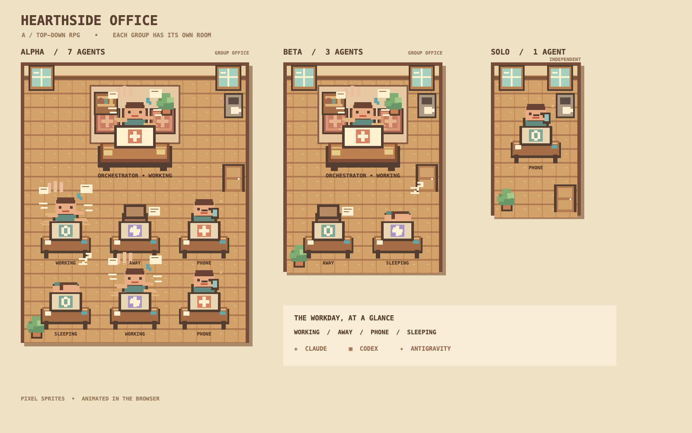
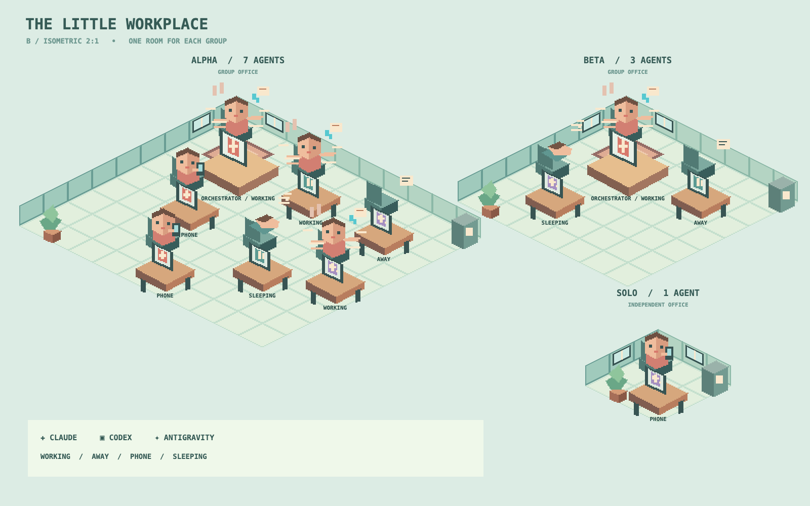
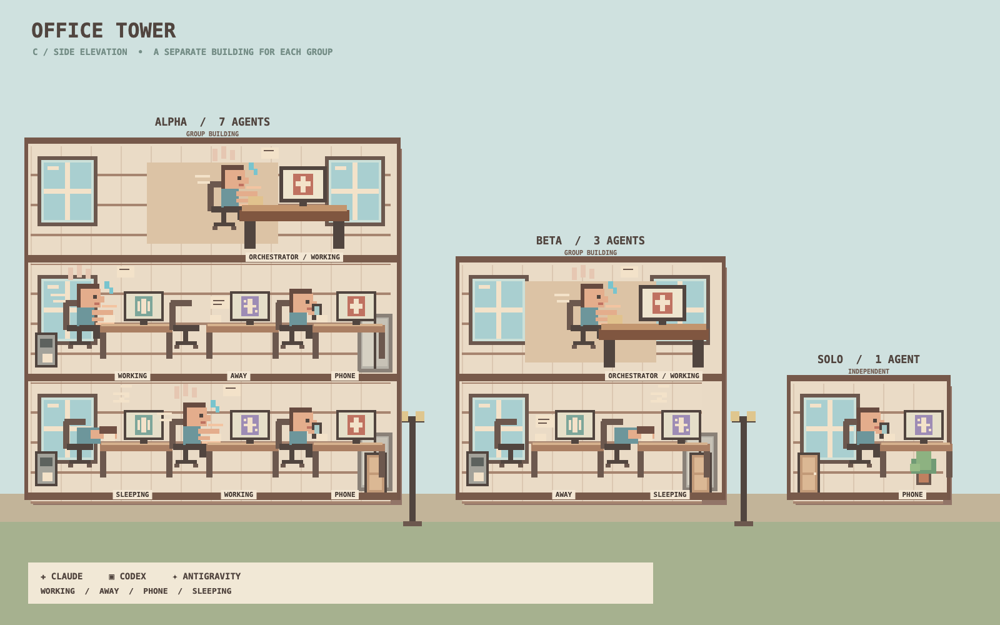
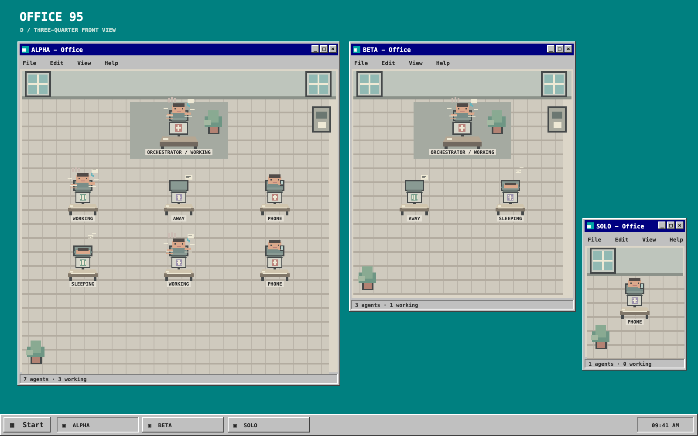

Agent Office / v3
시안 이미지를 비교하고 이름을 눌러 움직이는 오피스를 확인하세요.

A / Hearthside
탑다운 RPG · 따뜻한 목재 사무실

B / Little Workplace
2:1 아이소메트릭 · 입체적인 공간

C / Office Tower
측면 단면 · 그룹별 건물과 층

D / Office 95
3/4 정면 뷰 · 데스크톱 창